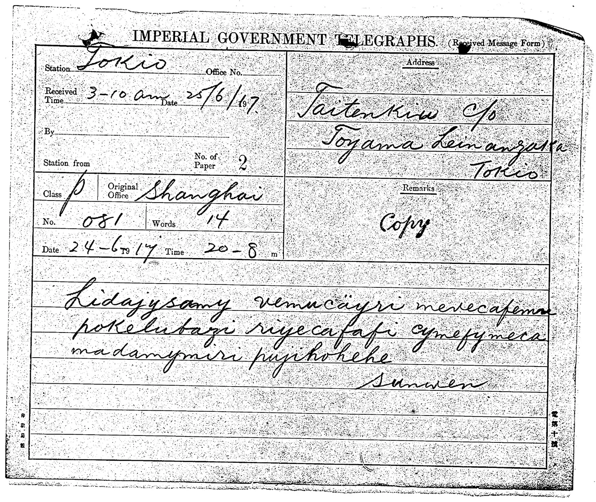
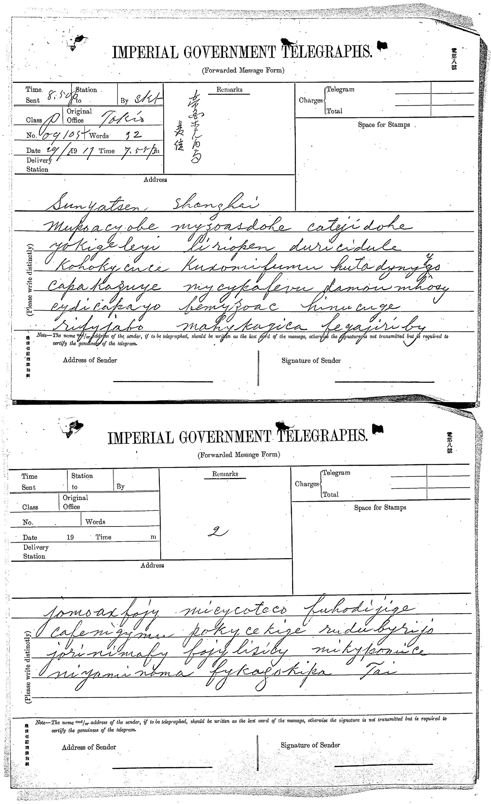

The ciphertexts
密电原文与读本
目标：日本亚洲历史资料中心（JACAR）B03050090200 帧 0509（1917-06-24，孙中山 上海 → 戴季陶 东京，署名 Sunwen）与帧 0511（1917-06-29，戴季陶 东京 → 孙中山 上海，两张电报纸，署名 Tai）。
电报扫描图




出处：日本外务省外交史料馆藏，亚洲历史资料中心（JACAR）提供，Ref. B03050090200。 本仓库中的副本取自 Brice Dudout 公开的 wenmi 项目（Git blob SHA 与研究记录一致），不在本仓库 CC BY 4.0 授权范围内，使用请遵循 JACAR 利用规定。点击可看大图。 下文黄底 = 已知存在争议的读法。
读本 1：Bourdeau 原始转录（raw，冻结不改）
来源：dbourdeau/cyphersolver，冻结于 data/ciphertexts.json。
1917-06-24_0509Lidajysamy vemucayri mevecafema(u) pokelutazi riyecafafi cymefymeca madamymiri pujihokehe Sunwen
1917-06-29_0511Mukoacyobe myzoasdoke catejidoke yokigeleyi liriopen duricidule kohokycuee kuxomifumu hutadyny(y)go capakazuye mycykafevu damoumhosy cydicapayo benyzoac hinucuge rifyjabo(?) mahykagica fegajiriby jomoaxfojy micycoteco fuhodijige cafemigymu pokycekige rudubyrijo jorinimafy fojylisiby mikypomice miyaminoma fykazokipa Tai
读本 2：Dudout 独立盲读（witness）
来源：bdudout/wenmi（CC BY 4.0），冻结于 data/independent_witness.json。不是唯一核定原文。
1917-06-24_0509（8 词）lidajysamy vemucicyri mevecafemu pokelubazi riyecafafi cymefymeca madamymiri pujihohehe
1917-06-29_0511 第1页（18 词）muposacyobe myzoasdohe catyidohe yokigeleyi liriopen duricidule kohokycuce kuxomifumu hutadynyfo capakazuye mycykafevu damowmhosy cydicapayo bemyzoac hinucuge rifygabo mahykagica fegajiriby
1917-06-29_0511 第2页（11 词）fomoaxfojy micycoteco fuhodigige cafenigymu pokycekige rudubyrijo gorinimafy fogylisicy mikypowice niyaminoma fykagokipa
Round 18 解析：删除元音开头虚码后的四字母电码流
同色下划线 = 重复电码（cafe×3、mupo×3、yobe、kige、capa、fojy、mafy 各×2）。这是结构假设，不是译文；重复的 yobe myzo 双码是将来做已知明文攻击的首选位置。
0509（1917-06-24 孙→戴，20 码）lida jysa myve muce kyri meve cafe mupo kelu tazi riye cafa ficy mefy meca mada mymi ripu jiho kehe
0511a（1917-06-29 戴→孙，第1页 40 码）mupo yobe myzo doke cate jido keyo kige leyi liri duri cidu leko hoky cuce kuxo mifu muhu tady nygo capa kazu yemy cyka fevu damo hosy cydi capa yobe nyzo hinu cuge rify jabo mahy kagi cafe gaji riby
0511b（第2页 27 码）jomo fojy micy cote cofu hodi jige cafe migy mupo kyce kige rudu byri jojo rini mafy fojy lisi bymi kypo mice miya mino mafy kazo kipa
已知的字符级疑点
| 位置 | 候选读法 | 状态 |
|---|---|---|
| 0509 第2词 | vemucäyri（摩斯 ä）→ vemucekyri / vemucaayri / vemucrtyri；独立视觉读 vemucicyri | 未定（R17） |
| 0509 第3词 | mevecafema(u) / mevecafemu | R16 倾向 10 字母 |
| 0511 第1词 | mukoacyobe / muposacyobe（11字母） | 未定 |
| 0511 第3词 | catejidoke / catyidohe（9字母） | 未定 |
| 0511 第7词 | kohokycuee / kohokycuce | R18 唯一强负相位词，重点复核 |
| 0511 第9词 | hutadyny(y)go / hutadynyfo | 未定 |
| 0511 第12词 | damoumhosy / damowmhosy | 未定 |
| 0511 页界 | 第1页末 / 第2页首是否漏、增一组 | R18 虚码解析后不再需要 |